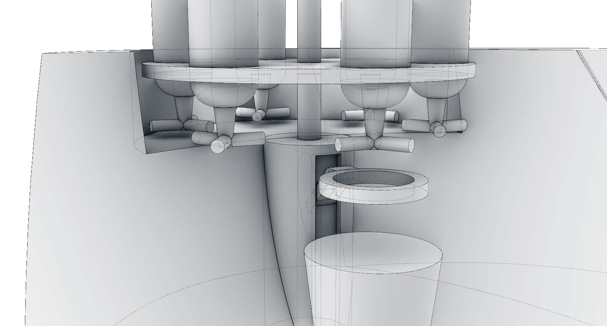
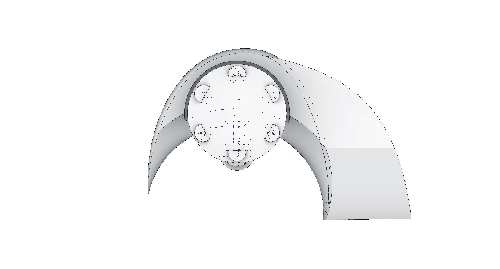
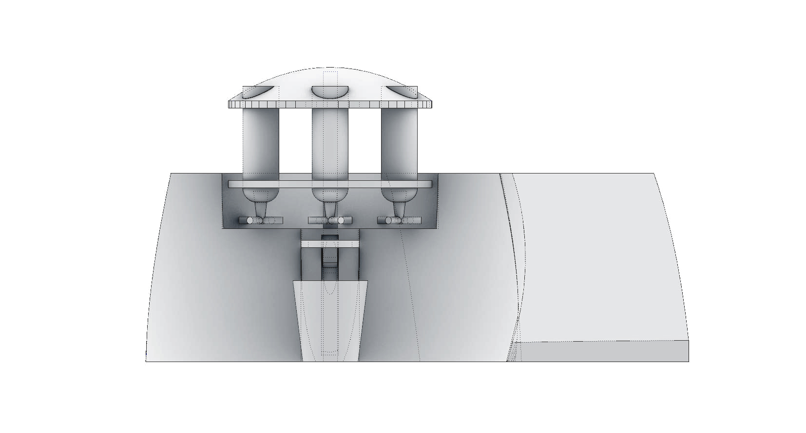
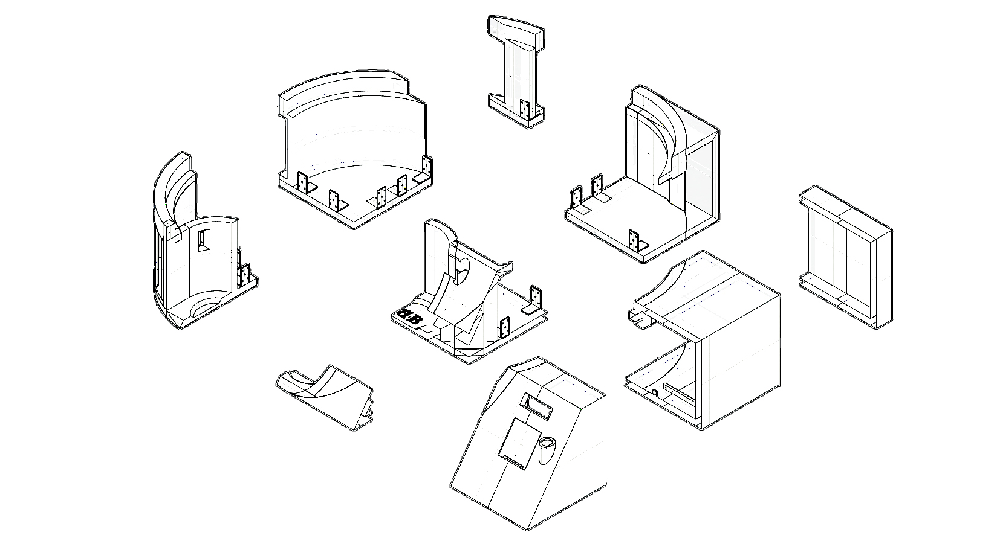
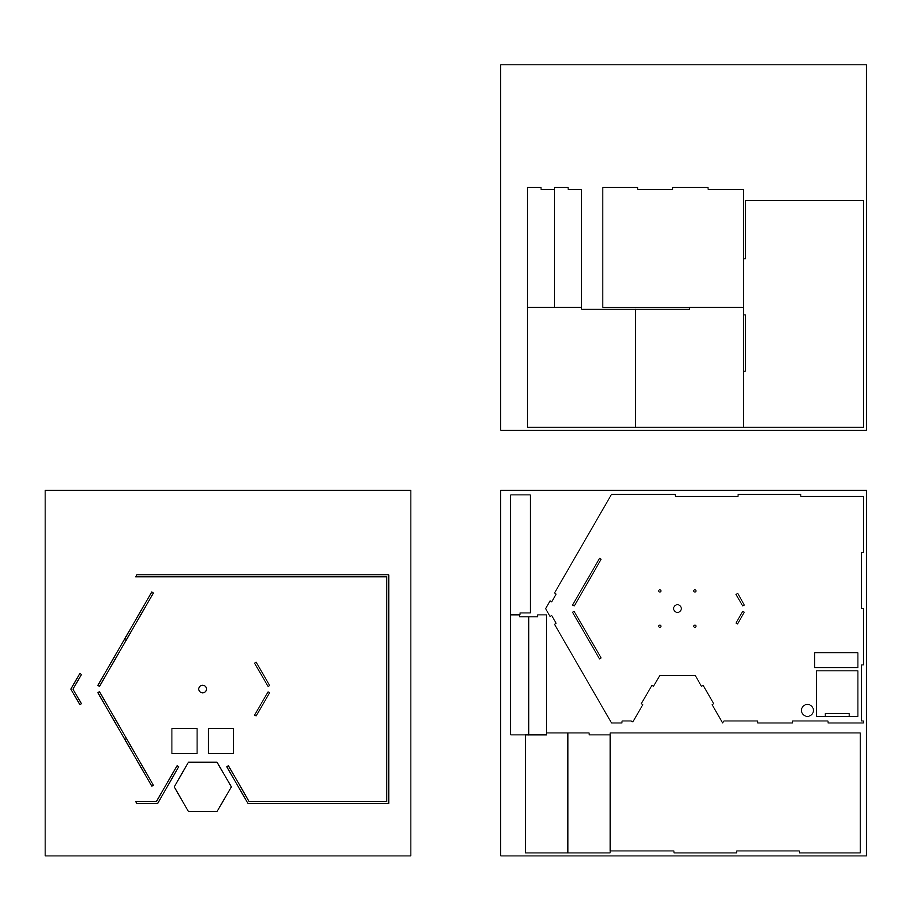
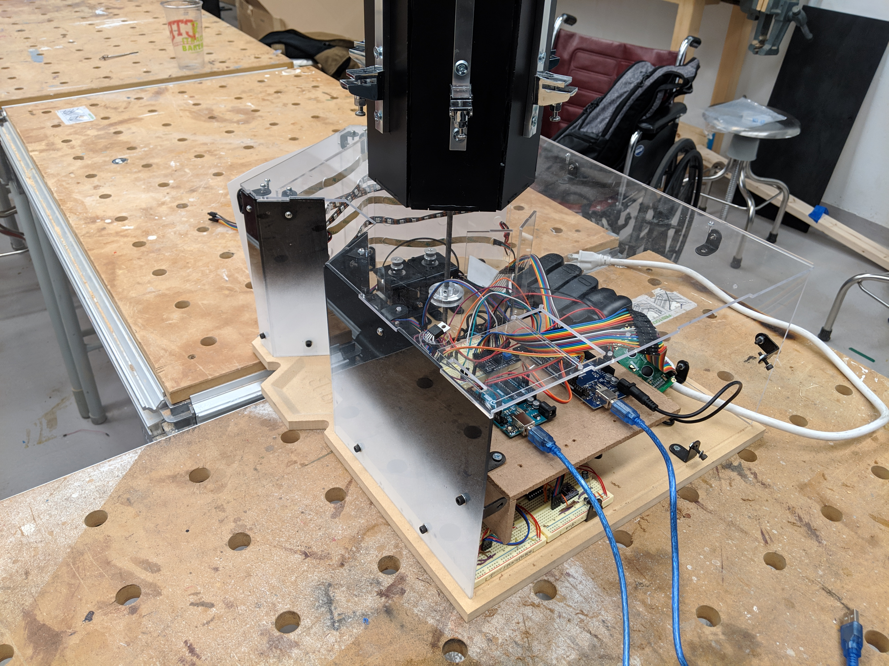
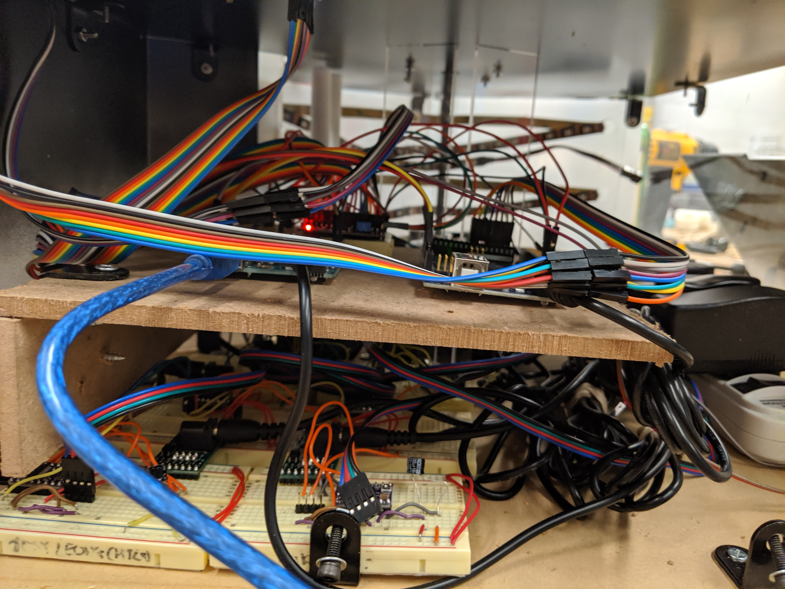

Have you ever arrived home after a long day of work and just want to sit down and enjoy a nice refreshing beverage? Or maybe you’re having some friends over for some drinks and a board game but don’t want to be held up in the kitchen making everyone’s drink by hand while the others enjoy all the fun. The Barbot is your solution!
The product we prototyped and developed was an automated beverage maker and dispenser designed for any household. The product has the base functionality of crafting pre-programmed beverages on command. What makes this product unique however is the auto-make feature. The prototype uses a temperature sensor to measure the current user/customer’s present state. From this sensor, the machine decides to craft a specific drink tailored to the exact customer at the exact time of order.
Mark 1: Initial Prototype
The first prototype we made contained all the necessary parts
for the barbot to succeed. This includes: (1) a rotating upper
section holstering 6 different liquids, (2) a ring that moves
vertically to push up against the bottle top attachment, (3) a
case to house all the innards, and lastly a panel to provide
user input and feedback.



Mark 2: A Prototype To 3D Print
The second prototype was designed in such a way that the
entire barbot could be 3D printed in 9 separate pieces. Each
of these pieces would fit perfectly on the limits of the printers
we have at Gates Hall. The intention of this was to expedite the
building process, so the team could focus on programming
various functionalities for the user. Furthermore, Mark 2 was
designed with the intention of providing adequate space for
the electronics that it was to house. This meant less curves
and acute corners, but still the same sleek design.

Mark 3: Final Lasercut Design
After failed attempts of 3D printing such complex models,
we had to go back to the drawing board. Our solution was
to design faces that could be laser cut and pieced together.
This minimized our design to even less curves, ergo we
adopted an already utilized motif: the hexagon. Reflecting
our six sided rotating holster, the base of our model is a
CNC routered piece of MDF wood, while the plexiglass
sides were arranged to fit on our two 24”x24” sheets. When
assembled, we applied final touches of beautification such
as a gradient paint job, color matched brackets, and of
course the slightly obnoxious (but passable) rotor ornament.

Our implementation of functionalities was accomplished through using two different microcontrollers: the
Arduino Mega, and the Arduino Uno. The reason for this was because we had to run some processes
simultaneously.
Arduino Mega: The mega controlled most of our inputs and outputs. Occupying 2 direction pins and 2 step pins, it easily
powered our 4 motors. The remaining pins were connected to the keypad, LCD display, and temperature
sensor.
Arduino Uno: We separated the functions of the LED strip as it was a function that we wanted running in the background
of the bot. The initial design was for the two microcontrollers to communicate through I2C in such a way that
the LED provided graphic feedback to the user, but due to a lack of time that goal was unaccomplished.


 FUTURISTIC INDIVIDUALITY
METHODICAL
EMPATHY
CONTACT
FUTURISTIC INDIVIDUALITY
METHODICAL
EMPATHY
CONTACT